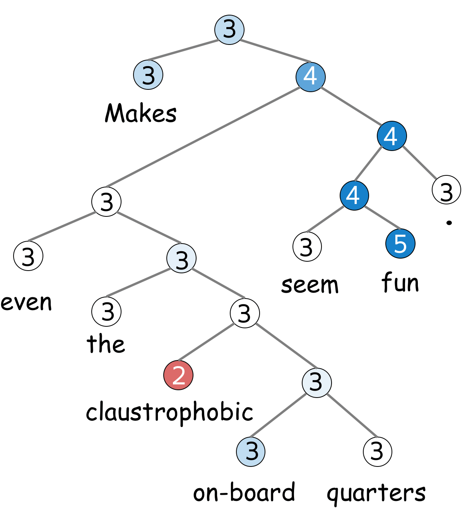
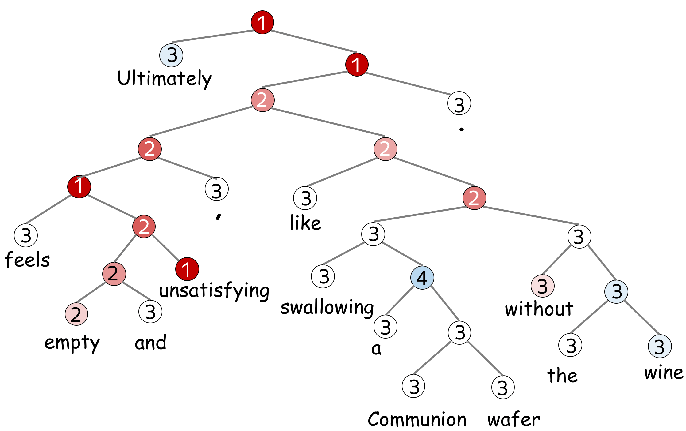
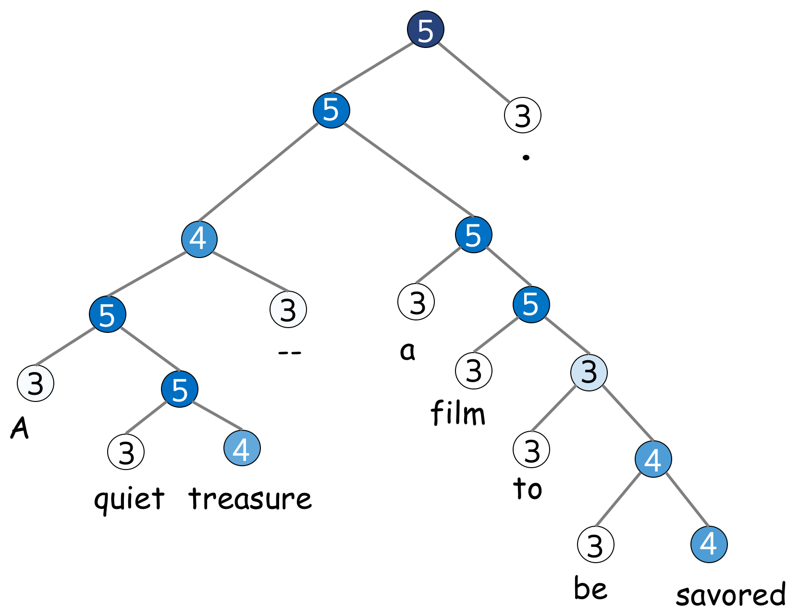

Recopilación de datos
Datos estructurados vs. datos no estructurados
Los datos son el oro del siglo xxi (...).
Ejemplo de datos estructurados

Clasificación multiclase:
hay muchas etiquetas, pero solo una es correcta

Clasificación binaria:
hay dos etiquetas y solo una de ellas es correcta

Clasificación multiclase:
hay muchas etiquetas y varias pueden ser correctas
Text classification is an extremely popular task. You enjoy working text classifiers in your mail agent: it classifies letters and filters spam. Other applications include document classification, review classification, etc.
Text classifiers are often used not as an individual task, but as part of bigger pipelines. For example, a voice assistant classifies your utterance to understand what you want (e.g., set the alarm, order a taxi or just chat) and passes your message to different models depending on the classifier's decision. Another example is a web search engine: it can use classifiers to identify the query language, to predict the type of your query (e.g., informational, navigational, transactional), to understand whether you what to see pictures or video in addition to documents, etc.
Since most of the classification datasets assume that only one label is correct (you will see this right now!), in the lecture we deal with this type of classification, i.e. the single-label classification. We mention multi-label classification in a separate section (Multi-Label Classification).
Datasets for Classification
Datasets for text classification are very different in terms of size (both dataset size and examples' size), what is classified, and the number of labels. Look at the statistics below.
| Dataset | Type | Number of labels | Size (train/test) | Avg. length (tokens) |
|---|---|---|---|---|
| LaSolanaNews | tema | 7 | 1093 | 200 |
| IMDb Review | opinión | 2 | 25k / 25k | 271 |
The most popular datasets are for sentiment classification. They consist of reviews of movies, places or restaurants, and products. There are also datasets for question type classification and topic classification.
To better understand typical classification tasks, below you can look at the examples from different datasets.
How to: pick a dataset and look at the examples to get a feeling of the task. Or you can come back to this later!
Dataset Description (click!)
LaSolananews
Label: 3
Review:
Makes even the claustrophobic on-board quarters seem fun .

Label: 1
Review:
Ultimately feels empty and unsatisfying , like swallowing a Communion wafer without the wine .

Label: 5
Review:
A quiet treasure -- a film to be savored .

Dataset Description (click!)
The dataset is gathered from Yahoo! Answers Comprehensive Questions and Answers version 1.0 dataset. In contains the 10 largest main categories: "Society & Culture", "Science & Mathematics", "Health, "Education & Reference", "Computers & Internet", "Sports", "Business & Finance", "Entertainment & Music", "Family & Relationships", "Politics & Government". Each class contains 140,000 training samples and 5,000 testing samples. The data consists of question title and content, as well as the best answer.
Label: Society & Culture
Question Title: Why do people have the bird, turkey for thanksgiving?
Question Content: Why this bird? Any Significance?
Best Answer
It is believed that the pilgrims and indians shared wild turkey and venison on the
original Thanksgiving.
Turkey's "Americanness" was established by
Benjamin Franklin, who had advocated for the turkey, not the bald eagle,
becoming the national bird.
Label: Science & Mathematics
Question Title: What is an "imaginary number"?
Question Content: What is an "imaginary number",
and how is it treated in algebra equations?
Best Answer
Imaginary numbers are numbers than when squared equal a negative number, as in i^2 = -1,
where i is the imaginary number. You'll also often see them represented as i = √-1
(that's the square root of -1).
Don't be confused by the poorly chosen name -
imaginary numbers do indeed exist and are used in advanced math, such as in the
physics of electromagnetic fields. The analogy that Wikipedia uses is a good one -
just like you don't need the concept of fractions to count stones, it doesn't mean that
fractions don't exist. :)
Label: Health
Question Title: Does echinacea really help prevent colds?
Question Content: Or is a waste of money...
Best Answer
Well, there appears to be some controvery about this. While some people swear by the
stuff, others say that it has no real effect on overcoming a cold.
Here are some
links, one of which is from a National Institute of Health study. I hope these help
you decide whether to head to the health store or not.
Label: Education & Reference
Question Title: How do I find an out of print book?
Question Content: When I was a kid I remember seeing a book that was like an
yearbook of all newspapers published by the Times during WW II.
Each of the years is compiled into a different book. It gave one a very
uniqie perspecitev into the UK druing the war, and even had advertisements
from thaat time. Anybody out there know how to track such books?
Best Answer
here are several websites that you can find rare or out of print books.
A couple would be alibris.com or abebooks.com. These sites list books by
booksellers all over the country and some internationally.
Label: Computers & Internet
Question Title: How can I record audio directly from the browser to the web server?
Question Content: For a podcasting application, I'd like my web server
to be able to receive audio straight from the browser. Something like a "Push to talk"
button. It seems it's possible to do this with Flash. Is there any other way?
With
Flash, do I need to buy a Macromedia server licence, or are there alternatives to have
Flash on the browser talk to my server?
Best Answer
Userplane has an audio/video recorder that will do that -
you can check it out at http://www.userplane.com/apps/videoRecorder.cfm
Label: Sports
Question Title: Why doesn't the NBA implement a minor leagues?
Question Content: I don't want to see any more High School kids on the court,
shooting airballs and missing defensive assignments.
Best Answer
The NBA does have minor leagues - they're called the CBA, and the International leagues. :)
Seriously - because viewers seem to value explosiveness over efficiency,
I think we're seeing a major shift in the average age of NBA players towards
young athletes that are quicker, high-flying and more resilient to injury.
I wouldn't be surprised at all if by the end of this decade the average age of the
league allstars is well under 25.
Label: Business & Finance
Question Title: When will Google buy Yahoo?
Question Content: The two businesses are very complementary in terms
of strengths and weaknesses. Do we want to beat ourselves up competing with
each other for resources and market share, or unite to beat MSFT?
Best Answer
Their respective market caps are too close for this to ever happen.
Interestingly,
many reporters, analysts and tech pundits that I talk to think that the supposed
competition between Google and Yahoo is fallacious, and that they are very different
companies with very different strategies. Google's true competitor is often seen as
being Microsoft, not Yahoo. This would support your claim that they are complementary.
Label: Entertainment & Music
Question Title: Can someone tell me what happened in Buffy's series finale?
Question Content: I had to work and missed the ending.
Best Answer
The gang makes an attack on the First's army, aided by Willow, who performs a powerful
spell to imbue all of the Potentials with Slayer powers. Meanwhile, wearing the amulet
that Angel brought, Spike becomes the decisive factor in the victory, and Sunnydale is
eradicated. Buffy and the gang look back on what's left of Sunnydale, deciding what
to do next...
--but more importantly, there will no longer be any slaying in Sunnydale,
or is that Sunnyvale....
Label: Family & Relationships
Question Title: How do you know if you're in love?
Question Content: Is it possible to know for sure?
Best Answer
In my experience you just know. It's a long term feeling of always wanting to share
each new experience with the other person in order to make them happy, to laugh or
to know what they think about it. It's jonesing to call even though you just got off
an hour long phone call with them. It's knowing that being with them makes you a
better person. It's all of the above and much more.
Label: Politics & Government
Question Title: How come it seems like Lottery winners are always the
ones that buy tickets in low income areas.?
Question Content: Pure luck or Government's way of trying to balance the rich and the poor.
Best Answer
I would put it down to psychology. People who feel they are well-off feel no need to participate in the
lottery programs. While those who feel they are less than well off think "Why not bet a buck or two
on the chance to make a few million?". It would seem to make sense to me.
addition: Yes Matt -
agreed. I just didn't state it as eloquently. Feeling 'no need to participate' is as you say related to
education, and those well off tend to have a better education.